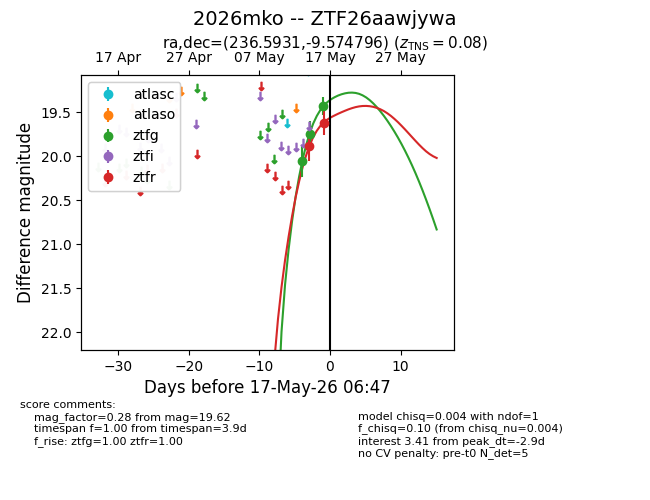
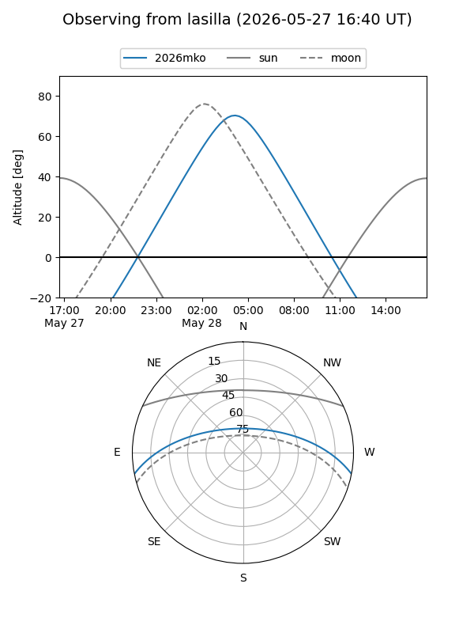
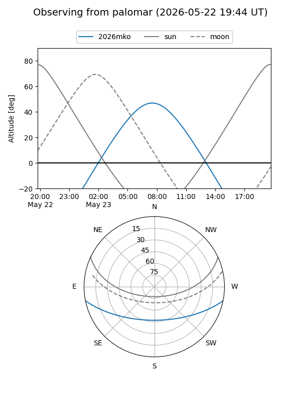
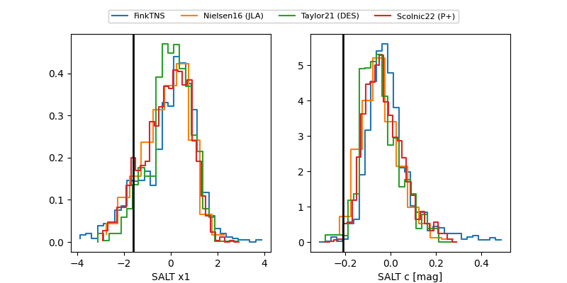

2026mko
Target 2026mko at 2026-05-17 06:49
Aliases and brokers:
FINK: link
Lasair: link
ALeRCE: link
TNS: link
YSE: link
alt names
ZTF26aawjywa (ztf,fink_ztf)
2026mko (tns,yse)
Coordinates:
equatorial (ra, dec) = 236.5931,-9.57480
equatorial (HMS+DMS) = 15:46:22.34,-09:34:29.27
galactic (l, b) = (358.1804,+33.93601)
Flags:
confirmed ia
Photometry:
last ztfg=19.43, ztfr=19.62
3 ztfg, 2 ztfr detections
Lightcurve

Visibility


Additional plots
